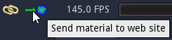
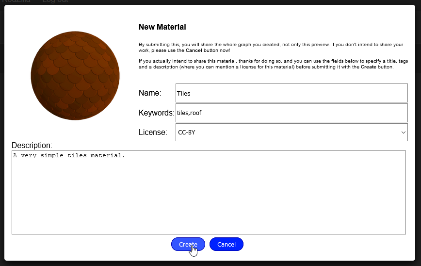

Sharing materials and brushes¶
Material Maker has a website where users can share their materials and brushes at the following address: https://www.materialmaker.org Pages of this website can communicate with Material Maker to transfer materials and brushes.
Importing materials and brushes¶
To import materials into Material Maker, it is first necessary to open this website using the Open Website (broken link) button in the top right corner of the user interface. This will open this web page in your default web browser. In the Material Maker user interface, the broken link button will change to connected link when the page is loaded.

Opening the web site this way makes it possible to import a material from the Materials page by simply clicking on the Open in Material Maker button. Material Maker will automatically open the selected material in a new Project tab.

Likewise, a brush can be imported from the Brushes page if the active project in Material Maker is a model painting project.
Sharing materials and brushes¶
To share a material or a brush, it first necessary to create and account (using the Register button) and be connected to the site (using the Log in button). In the Material Maker interface, the connect button will be shown in yellow.
When you are connected, clicking on the Send material to web site button opens a form in the web browser, where you can specify a name for your material, a few keywords, a license and a description, and submit it. Be aware this will share the whole graph of your material, and other Material Maker users will be able to reuse and modify your work (which is the main purpose of the website).
